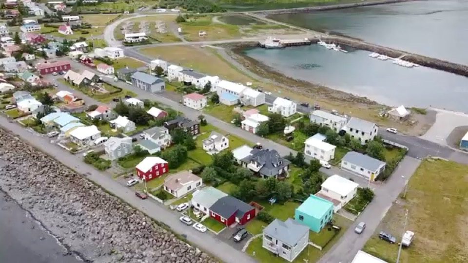

浙江省 · 舟山市
群岛、渔港和一整年的海风

舟山是浙江唯一能「住在海岛上」的地级市：普陀山、东极岛、嵊泗都在境内，海鲜便宜，节奏极慢。
一句话：想安静住海边、不赶时间的人。
定海：主城区，生活配套最全；
普陀（沈家门、东港）：靠近码头和海鲜市场，去普陀山方便；
各岛（嵊泗、东极、桃花岛）：风景最好，但补给和医疗都靠船。
【房租参考（月租）】定海一居 1800–3000 元。
【网速】城区 200–500 Mbps，岛上偏弱。
【几月最舒服】4–5 月、9–10 月；7–9 月台风会影响船班。
【交通】跨海大桥通宁波，岛与岛之间靠船。
【要注意】台风季船班会停运，行程必须留缓冲；岛上医疗条件有限，有慢性病要先备足药。
一、7–9 月台风季船班会停运，行程一定留缓冲，否则可能被困在岛上或回不来。
二、离岛（嵊泗、东极）风景最好，但医疗和补给都靠船，有慢性病要先备足药。
三、冬季海风大、阴雨多，体感比气温冷。
四、岛与岛之间交通耗时比想象的长，安排行程别按地图直线距离算。
城区宽带 200–500 Mbps 很稳，但岛上明显偏弱，住前务必实测；
咖啡馆集中在定海和东港，选择不多；
环境安静、靠海，是"写东西"类工作的好地方；
台风季网络和供电偶有波动，重要工作留好备份。
这只是静态版。互动版里能看到舟山的实拍短片、按月的气候图，以及住过这里的人写的笔记。
在栖旅里打开舟山 →